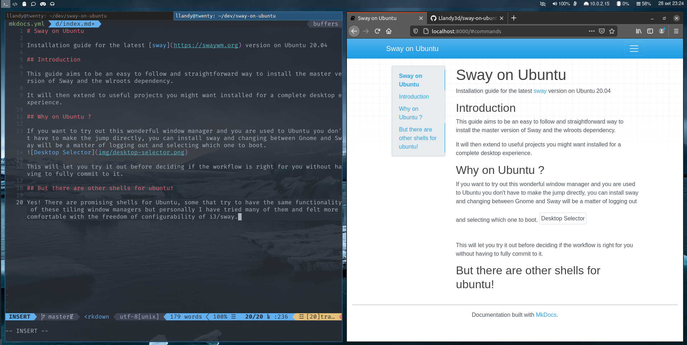
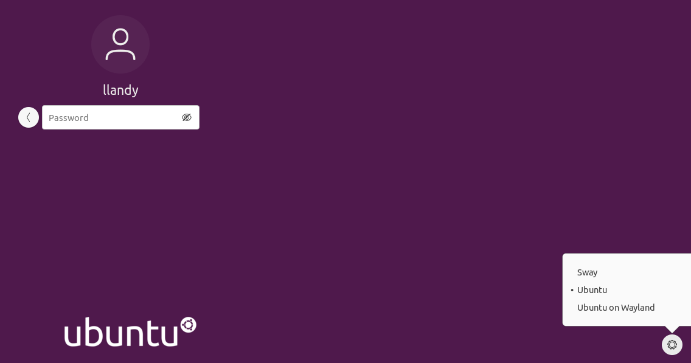

Sway on Ubuntu
Installation guide for the latest sway version on Ubuntu 20.04
Source can be found on github
Introduction
This guide aims to be an easy to follow and straightforward way to install the master version of Sway and the wlroots dependency.
It will then extend to useful projects you might want installed for a complete desktop experience.  Example of Customized Sway setup (dotfiles)
{kind=link}
Why on Ubuntu ?
If you want to try out this wonderful window manager and you are used to Ubuntu you don't have to make the jump directly, you can install sway and changing between Gnome and Sway will be a matter of logging out and selecting which one to boot. 
This will let you try it out before deciding if the workflow is right for you without having to fully commit to it.
But there are other shells for ubuntu!
Yes! There are promising shells for Ubuntu, some that try to have the same functionality of these tiling window managers but personally I have tried many of them and felt more comfortable with the freedom of configurability of i3/sway.
Why Sway/wayland instead of i3 ?
If you reached this guide you should already have your reasons of why you are interested in sway & wayland, and I can say that if you prefer to try instead and use i3 on Xorg there is nothing wrong with that.
My personal reason as for why I am using Sway/Wayland is that I reached a point where I needed a keyboard centered workflow for my desktop that allowed me to better manage a great amount of opened windows. What sold me is that while I was trying many things out on virtual machines, with wayland for the first time I had a tear free video experience.
I was so used to having tearing videos, that a full hd video experience on youtube inside of a vm sold me immediately. It might not be a good reason for the switch, but after having everything setup with my preferences I have zero plans of going back to another workflow.
What this guide is not
This guide is not a guide to learn how to use a tiling window manager.
It's a guide on how to install and configure it to have a working desktop environment, useful additions and troubleshooting.
If you are interested in learning on how to use Sway before installing it, I can advise this 3 part course on youtube, it's about i3 but i3 & sway are mostly interchangeable with some differences and those videos will get you up to speed.
note: one error is that it mentions that there is no fullscreen in i3/sway while there is a keybinding to go fullscreen. (<mod> + f)
Nvidia cards
As stated in the wiki sway does not support proprietary drivers, so it should be fine with intel integrated graphics cards and amd gpus.
If you have an nvidia card you could try to start sway with the flag --my-next-gpu-wont-be-nvidia or use the nouveau drivers but the results I have not tested.